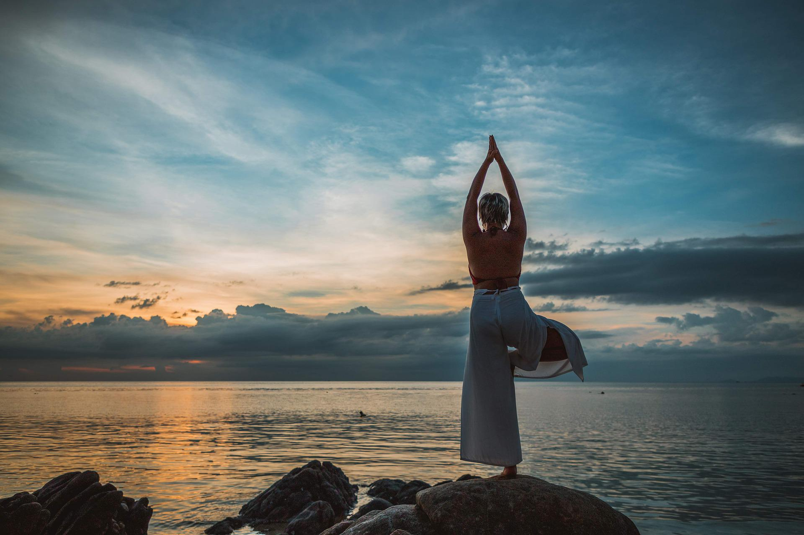

Te invitamos a que tomes una sesión para experimentarlo, y si ya venís haciéndolo, que invites a tus amigos y familia.
El yoga es una práctica milenaria que busca el equilibrio de todo nuestro sistema abordando el contacto profundo entre los tres cuerpos que nos conforman, el físico, el mental y el espiritual. Se trabaja con distintas técnicas focalizando en la respiración como actividad fundante asi como la introspección. Actualmente contamos con clases de YOGA INTEGRAL que abarca una amplia gama de estilos yoguicos en una práctica orientada al bienestar y a la salud integra de quien la practique.
Profesoras
Sofía Pega
Una enamorada del Yoga y practicante hace varios años. Instructora de Yoga Integral de la Asociación Bonaerense de Yoga (Profesorado en curso), especializada en Yoga para embarazadas y en Yoga y Chakras . Al mismo tiempo cursa el Instructorado en Yoga Terapéutico.
"El yoga es mucho más que una disciplina física, el yoga es unión y busca la integración del ser humano en todos sus niveles, armonizando y alineando el cuerpo, la mente y el espíritu. Para mi, además, el yoga es calma y eso intento transmitir en cada una de mis prácticas.
Horarios: Martes y Jueves 15 y 16hs
Contacto: (2920) 15-257458
Carolina Camaña
Profesora y practicante de Yoga Integral, formada en la escuela Conciencia Yoga certificada en la alianza argentina de Yoga. Creadora del espacio Harsha Yoga en el cual se comparte la practica desde la apertura hacia las distintas modalidades de práctica teniendo en cuenta las singularidades de cada alumno y alumna.
"Entiendo ese espacio como la puerta de entrada a la disciplina que se orienta al autoconocimiento y al respeto y cuidado del cuerpo propio."
Horarios: Martes y Jueves 20.30 hs
Contacto: (2920) 15-402197
Ana Laura Araujo
Profesora de yoga integral, realizo sus estudios en el Instituto "surya namaskar", maestro Ruben Starsak obtenido en Rawson, Chubut el 14 de marzo de 2020.
Nivel 1 y 2 de reiki usui, realizado en patagones con Lucrecia Fernández Sagredo.
Horarios: Lunes y miércoles 15hs.
Contacto: (280) 466-3008.
Yanina Castro
Formación en yoga integral, prácticas de asthanga y vinaya yoga;mis clases aplican lo más adecuado de cada estilo según lo que tú cuerpo necesite, prioridad de adaptación de la postura al cuerpo y no del cuerpo a la postura.
Horarios Lunes y miércoles 18:10 hs.
Contacto: (2920) 67-5747.

Yoga integral
Para entender en qué consiste el Yoga Integral, primero debemos señalar que lo que busca el Yoga es la Integración.
La práctica de Yoga permite la integración y la plenitud de las personas, y el Yoga Integral se propone como una metodología explícita y concreta que nos ayuda a disfrutar la vida.
Cualquier método de Yoga busca lo mismo, es decir, el fin del Yoga es uno sólo. Sin embargo, las vías para llegar a ese objetivo son diversas, así como las definiciones de la plenitud. Es por eso que existen y han existido, a lo largo de la milenaria historia del Yoga, diversos y múltiples Métodos de Yoga, cuyos maestras/os o exponentes, de acuerdo a su experiencia, filosofía y visión, han propuesto una serie de pasos o técnicas determinadas para lograr este fin integrador y de plenitud existencial.
En sus inicios, quienes difundieron o iniciaron el Yoga Integral buscaron reunir en un solo método, todos los métodos y, de esta manera, llegar a mayor cantidad de personas e integrar a la diversidad de tipos de personas en la práctica del Yoga.
El Yoga Integral siempre ha tenido un fin social, dado que pretende llegar a todo tipo de individuos e integrar el Yoga en la sociedad y, de cierta forma, facilitar su acceso y “aterrizarlo” a la realidad social.
Hay muchos exponentes e inspiraciones del Yoga Integral, como por ejemplo Mirra Alfasa , Aurobindo y Ramana.
¿Qué es el Yoga Integral y qué lo diferencia de otros métodos de Yoga?
El Yoga Integral es un método integrador de técnicas: busca que las personas practiquen diversos tipos de técnicas de yoga, tanto de carácter físico, como mental y espiritual, de acuerdo a sus posibilidades, interés y facilidad.
El Yoga Integral es un método de Yoga de carácter social: promueve la inclusión y la integración de las técnicas de Yoga en la sociedad, en todos los estratos, contextos y para todas las condiciones. Promueve la práctica de Yoga comunitaria y concibe al Yoga como una herramienta de transformación individual, espiritual y también social.
El Yoga Integral es un método de carácter laico, ya que no promueve ninguna religión, creencia, visión, filosofía.
El Yoga Integral es un método de Yoga para todes: absolutamente todas las personas pueden practicar Yoga; tanto infantes, adolescentes, jóvenes, adultos, personas mayores, de todos los géneros y condiciones; el Yoga Integral busca adaptar sus técnicas a la individualidad y posibilidad de cada persona, entendiendo que todas las personas somos diferentes y únicas.
El Yoga Integral busca entregar las técnicas de Yoga de manera cercana, siempre guiadas desde el amor y la compasión, de tal forma que cada individuo, en cierto punto de su práctica personal y de manera autónoma, logre encontrar su propio camino hacia la Felicidad e Integración.